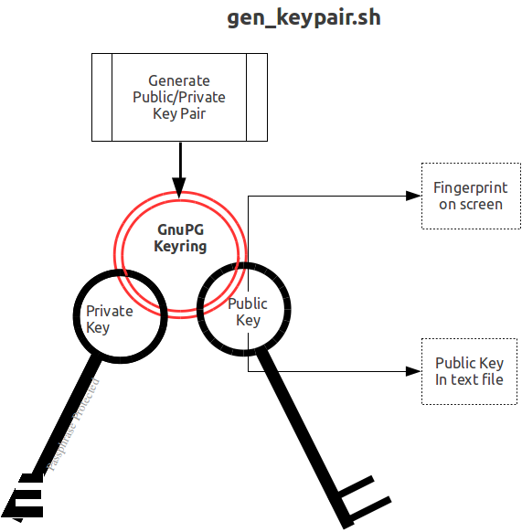
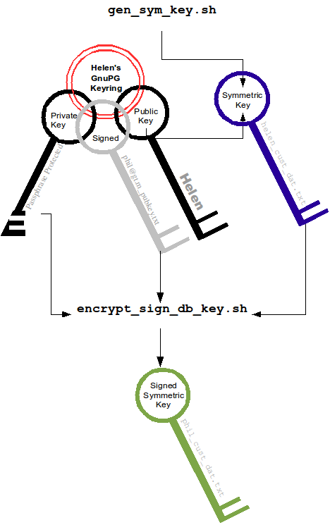
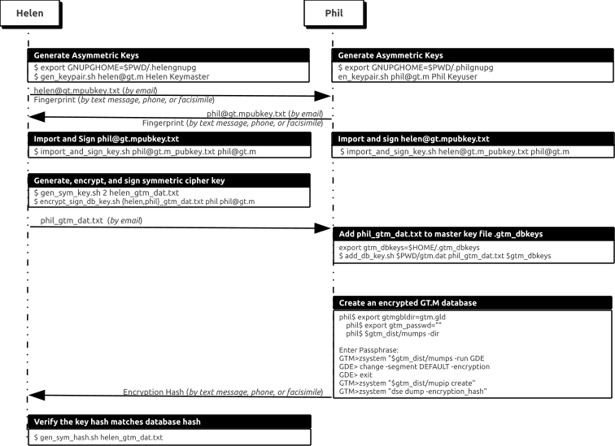

The commands here are all line oriented to illustrate that they can be automated by being called from GT.M or from a shell script. For interactive use, there are many graphical user interfaces (GUIs) usable with GPG. Although these examples were generated on Linux, usage on other UNIX systems should be virtually identical.
This is an example of key management using GPG and the reference implementation.
Helen Keymaster (helen@gt.m) is the master of keys, and provides a database key to Phil Keyuser (phil@gt.m). Helen does not manage the database. Phil is the database manager, but he is not the master of keys.In order to communicate securely, Helen and Phil each set up a GPG keyring, generate a public / private key pair, and exchange & authenticate each other's public keys. This permits a secure transfer of the key for the symmetric cipher used for the database.Warning: If you attempt key generation on a virtual machine, or other computer system that does not have a good supply of entropy, the gen_key_pair.sh script could take a very, very long time. Similarly, a key quality of 2 for the gen_sym_key.sh script on a machine without a plentiful supply of entropy can also tax your patience. Use a physical computer system with a lot of entropy. If you are able to, use an entropy gathering daemon such as egd (http://egd.sourceforge.net), or consider acquiring an entropy source such as the Entropy Key (http://www.entropykey.co.uk) that you can use to distribute entropy to your virtual machines.
The workflow is as follows:
-
Helen and Phil each create a new GPG keyring and a new public-private key pair[5]. In the gen_keypair.sh script GPG generates the key pair[6], putting public and private keys in the key ring; the latter locked with a passphrase. The public key is also exported to a text file, and its fingerprint is displayed in the terminal session. Each of them e-mails (or otherwise sends) her/his public key text file to the other[7]. This is illustrated below; first Helen, then Phil (if the GNUPGHOME environment variable is not set, it will default to
$HOME/.gnupg).
-
Helen e-mails helen@gt.m_pubkey.txt the file containing her exported public key to Phil, and Phil sends phil@gt.m_pubkey.txt, his exported public key to Helen. To protect against "man in the middle" attacks, they speak on the phone to exchange keyfingerprints, or send each other the fingerprints by text message,or facsimile - a different communication channel than that used to exchange the keys. Phil does likewise with Helen's key. They use the import_and_sign_key.sh shell script. After importing and signing each other's public keys, Phil and Helen can communicate securely with each other, even in the presence of eavesdroppers. Helen's keyring with Phil's imported key is shown below:

Using the gen_sym_key.sh script, Helen generates a symmetric cipher key for Phil to use in encrypting a new database file cust.dat. With a key strength of 2, a symmetric key is suitable for use in production and in the example is stored in file helen_cust_dat.txt encrypted with Helen's public key so that only she can decrypt it. The gen_sym_key.sh script never displays the symmetric cipher key; the key in the text file on disk can only be decrypted with Helen's private key.
-
With the encrypt_sign_db_key.sh script, Helen uses her private key to decrypt the symmetric cipher key in helen_cust_dat.txt, encrypts it with Phi's public key, and signs it with her private key, creating a file called phil_cust_dat.txt. She sends this file to Phil, either as an e-mail attachment, or putting it in a mutually agreed upon location on disk. As before, even though the key is on disk, it can be decrypted only with Phil's private key. Note that from this point on, even if Helen is hit by a truck, or resigns, Phil has access to the key and can use the same encrypt_sign_db_key.sh script to provide the key to, say, Xavier, Helen's successor. Helen preparing the key for Phil is shown below.

-
With the add_db_key.sh script, Phil now adds the key to his GT.M master key file. He can then create the encrypted database file with mupip create, load it with data and use it. Until the database is created and loaded with data, the key has no value and can be discarded at will. Once the database is created and loaded with the data, the key must be retained as long as access to the database - or even a backup thereof - is ever required. The entire process is illustrated below:

As a final check to make sure that the database was created with the correct symmetric cipher key and the correct cipher, Helen can use the gen_sym_hash.sh script to compute a hash from the key in helen_cust_dat.txt while Phil uses GT.M's dse dump -fileheader -all command to print the key from the file header of the database file he creates. If the hashes match, the database file has been correctly created.
Below are scripts of the key management example above.
Helen creates a new GPG keyring with a public and private key pair:
helen$ export GNUPGHOME=$PWD/.helengnupg helen$ $gtm_dist/plugin/gtmcrypt/gen_keypair.sh helen@gt.m Helen Keymaster Passphrase for new keyring: Verify passphrase: Key ring will be created in /home/helen/.helengnupg Key generation might take some time. Do something that will create entropy, like moving the mouse or typing in another session. gpg: checking the trustdb gpg: 3 marginal(s) needed, 1 complete(s) needed, PGP trust model gpg: depth: 0 valid: 1 signed: 0 trust: 0-, 0q, 0n, 0m, 0f, 1u /home/helen/.helengnupg/pubring.gpg --------------------------------- pub 1024D/BC4D0739 2010-05-07 Key fingerprint = B38B 2427 5921 FFFA 5278 8A91 1F90 4A46 BC4D 0739 uid Helen Keymaster <helen@gt.m> sub 2048R/A2E8A8E8 2010-05-07 Key pair created and public key exported in ASCII to helen@gt.m_pubkey.txt helen$
Phil creates a new GPG keyring with a public and private key pair:
phil$ export GNUPGHOME=$PWD/.philgnupg phil$ $gtm_dist/plugin/gtmcrypt/gen_keypair.sh phil@gt.m Phil Keyuser Passphrase for new keyring: Verify passphrase: Key ring will be created in /home/phil/.philgnupg Key generation might take some time. Do something that will create entropy, like moving the mouse or typing in another session. gpg: checking the trustdb gpg: 3 marginal(s) needed, 1 complete(s) needed, PGP trust model gpg: depth: 0 valid: 1 signed: 0 trust: 0-, 0q, 0n, 0m, 0f, 1u /home/phil/.philgnupg/pubring.gpg --------------------------------- pub 1024D/A5719A99 2010-05-07 Key fingerprint = 886A BAFC E156 A9AD 7EA9 06EA 8B8B 9FAC A571 9A99 uid Phil Keyuser <phil@gt.m> sub 2048R/AD37D5A0 2010-05-07 Key pair created and public key exported in ASCII to phil@gt.m_pubkey.txt phil$
Then Helen sends Phil the file helen@gt.m_pubkey.txt and Phil sends Helen the file phil@gt.m_pubkey.txt.
Helen imports Phil's public key into her keyring, verifying the fingerprint when she imports it, and signing it to confirm that she has verified the fingerprint:
helen$ $gtm_dist/plugin/gtmcrypt/import_and_sign_key.sh phil@gt.m_pubkey.txt phil@gt.m gpg: key A5719A99: public key "Phil Keyuser <phil@gt.m>" imported gpg: Total number processed: 1 gpg: imported: 1 ######################################################### pub 1024D/A5719A99 2010-05-07 Key fingerprint = 886A BAFC E156 A9AD 7EA9 06EA 8B8B 9FAC A571 9A99 uid Phil Keyuser <phil@gt.m> sub 2048R/AD37D5A0 2010-05-07 ######################################################### Please confirm validity of the fingerprint above (y/n/[?]): y Passphrase for keyring: Successfully signed public key for phil@gt.m received in phil@gt.m_pubkey.txt helen$
Phil likewise imports, verifies and sign's Helen's public key:
phil$ $gtm_dist/plugin/gtmcrypt/import_and_sign_key.sh helen@gt.m_pubkey.txt helen@gt.m gpg: key BC4D0739: public key "Helen Keymaster <helen@gt.m>" imported gpg: Total number processed: 1 gpg: imported: 1 ######################################################### pub 1024D/BC4D0739 2010-05-07 Key fingerprint = B38B 2427 5921 FFFA 5278 8A91 1F90 4A46 BC4D 0739 uid Helen Keymaster <helen@gt.m> sub 2048R/A2E8A8E8 2010-05-07 ######################################################### Please confirm validity of the fingerprint above (y/n/[?]): y Passphrase for keyring: Successfully signed public key for helen@gt.m received in helen@gt.m_pubkey.txt phil$
Helen and Phil can now securely exchange information.
Helen generates a symmetric cipher key for the new database file cust.dat:
helen$ $gtm_dist/plugin/gtmcrypt/gen_sym_key.sh 2 helen_cust_dat.txt helen$
Then she encrypts the symmetric cipher key with Phil's public key, signs it, and produces a file phil_cust_dat.txt that she can send Phil:
helen$ $gtm_dist/plugin/gtmcrypt/encrypt_sign_db_key.sh helen_cust_dat.txt phil_cust_dat.txt phil@gt.m Passphrase for keyring: gpg: checking the trustdb gpg: 3 marginal(s) needed, 1 complete(s) needed, PGP trust model gpg: depth: 0 valid: 1 signed: 1 trust: 0-, 0q, 0n, 0m, 0f, 1u gpg: depth: 1 valid: 1 signed: 0 trust: 1-, 0q, 0n, 0m, 0f, 0u helen$
Phil adds the key in phil_cust_dat.txt to his master key file $HOME/.gtm_dbkeys:
phil$ export gtm_dbkeys=$HOME/.gtm_dbkeysphil$ $gtm_dist/plugin/gtmcrypt/add_db_key.sh $PWD/gtm.dat phil_cust_dat.txt $gtm_dbkeys phil$
Phil creates a global directory, where he changes the configuration parameter for the database file cust.dat specifying that it be encrypted the next time it is created. (Remember that except for mapping from global variable names to database file names, configuration parameters in the global directory are used only when MUPIP creates new database files.) He then creates the database file, runs a DSE dump fileheader to extract the hash (highlighted in the output), and sends it to Helen for verification (notice that MUPIP CREATE generates an error for the mumps.dat file that exists already, but creates a new encrypted cust.dat file):
phil$ export gtmgbldir=gtm.gld phil$ export gtm_passwd="" phil$ $gtm_dist/mumps -dir Enter Passphrase: GTM>zsystem "$gtm_dist/mumps -run GDE" %GDE-I-LOADGD, Loading Global Directory file /var/myApp/databases/gtm.gld %GDE-I-VERIFY, Verification OK GDE> change -segment DEFAULT -encryption GDE> exit %GDE-I-VERIFY, Verification OK %GDE-I-GDUPDATE, Updating Global Directory file /var/myApp/databases/gtm.gld GTM>zsystem "$gtm_dist/mupip create" Created file /var/myApp/databases/gtm.dat Error opening file /var/myMpp/databases/mumps.dat : File exists %GTM-F-DBNOCRE, Not all specified database files, or their associated journal files were created GTM>zsystem "dse" File /var/myApp/databases/cust.dat Region CUST DSE> dump -fileheader -all File /var/myApp/databases/cust.dat Region CUST Date/Time 04-MAY-2010 11:24:10 [$H = 61850,41050] Access method BG Global Buffers 1024 Reserved Bytes 0 Block size (in bytes) 1024 Maximum record size 256 Starting VBN 129 Maximum key size 64 Total blocks 0x00000065 Null subscripts NEVER Free blocks 0x00000062 Standard Null Collation FALSE Free space 0x00000000 Last Record Backup 0x0000000000000001 Extension Count 100 Last Database Backup 0x0000000000000001 Number of local maps 1 Last Bytestream Backup 0x0000000000000001 Lock space 0x00000028 In critical section 0x00000000 Timers pending 0 Cache freeze id 0x00000000 Flush timer 00:00:01:00 Freeze match 0x00000000 Flush trigger 960 Current transaction 0x0000000000000001 No. of writes/flush 7 Maximum TN 0xFFFFFFFFE3FFFFFF Certified for Upgrade to V5 Maximum TN Warn 0xFFFFFFFF73FFFFFF Desired DB Format V5 Master Bitmap Size 112 Blocks to Upgrade 0x00000000 Create in progress FALSE Modified cache blocks 0 Reference count 1 Wait Disk 0 Journal State DISABLED Mutex Hard Spin Count 128 Mutex Sleep Spin Count 128 Mutex Spin Sleep Time 2048 KILLs in progress 0 Replication State OFF Region Seqno 0x0000000000000001 Zqgblmod Seqno 0x0000000000000000 Zqgblmod Trans 0x0000000000000000 Endian Format LITTLE Commit Wait Spin Count 16 Database file encrypted TRUE Dualsite Resync Seqno 0x0000000000000001 DB Current Minor Version 8 Blks Last Record Backup 0x00000000 Last GT.M Minor Version 8 Blks Last Stream Backup 0x00000000 DB Creation Version V5 Blks Last Comprehensive Backup 0x00000000 DB Creation Minor Version 8 Total Global Buffers 0x00000400 Phase2 commit pid count 0x00000000 Dirty Global Buffers 0x00000000 Write cache timer count 0xFFFFFFFF Free Global Buffers 0x00000400 wcs_wtstart pid count 0x00000000 Write Cache is Blocked FALSE wcs_wtstart intent cnt 0x00000000 Actual kills in progress 0 Abandoned Kills 0 Process(es) inhibiting KILLs 0 DB Trigger cycle of ^#t 0 MM defer_time 0 Database file encryption hash 12D119C93E28BBA9389C6A7FD53C2373CFF7181DF48FEF 213523B7B38199EF18B4BADB232D30CBDA2DBFC5F85D97D7A5C4A3E3D13276DCBB63B30EBDAA6B5 DD7 Full Block Writes OFF Full Block Write Len 0 TP blkmod nomod 0 TP blkmod gvcst_srch 0 TP blkmod t_qread 0 TP blkmod tp_tend 0 TP blkmod tp_hist 0 Free blocks 992 Backup blocks 0 Reformat blocks 0 Total blocks 992 Shmpool blocked FALSE File Offset 0x0000000000000000 Shmpool crit holder 0 Backup_errno 0 Backup Process ID 0 Backup TN 0x0000000000000000 Inc Backup TN 0x0000000000000000 Process Failed 0 Allocs since check 0 Backup Image Count 0 Temp File: Database is Fully Upgraded : TRUE Database WAS ONCE Fully Upgraded from V4 : TRUE Blocks to Upgrade subzero(negative) error : 0x00000000 TN when Blocks to Upgrade last became 0 : 0x0000000000000000 TN when Desired DB Format last changed : 0x0000000000000000 TN when REORG upgrd/dwngrd changed dbfmt : 0x0000000000000000 Block Number REORG upgrd/dwngrd will restart from : 0x00000000 Upd reserved area [% global buffers] 50 Avg blks read per 100 records 200 Pre read trigger factor [% upd rsrvd] 50 Upd writer trigger [%flshTrgr] 33 Snapshot in progress FALSE Number of active snapshots 0 Snapshot cycle 0 Active snapshot PID 0 Snapshot TN 0 Total blocks 0 Free blocks 0 Process failed 0 Failure errno 0 Snapshot shared memory identifier -1 Snapshot file name DSE> exit GTM>halt $
Phil calls Helen with the hash, texts her mobile, or sends e-mail. Helen ensures that the hash of the key she generated matches the hash of the database file created by Phil, and communicates her approval to Phil. Phil can now use the database. Either Phil or Helen can provide the key to other users who are authorized to access the database and with whom they have securely exchanged keys.
helen$ $gtm_dist/plugin/gtmcrypt/gen_sym_hash.sh helen_cust_dat.txt Passphrase for keyring:gpg: encrypted with 2048-bit RSA key, ID A2E8A8E8, created 2010-05-07" Helen Keymaster <helen@gt.m>"178E55E32DAD6BFF761BF917412EF31904C... helen$
The encrypted database file cust.dat is now ready for use. That file, all journal files, backups, and binary extracts will all have the same symmetric encryption cipher and key, which means that software libraries that provide that cipher and copies of the key (encrypted with the public keys of all those who are authorized to access them) must be retained as long as there may be any need to access data in that database file, its journal files, extracts and backups.
The following command sequence diagram illustrates how Helen and Phil operate with one another.

[5] This step can be omitted if they already have GPG keyrings and public and private keys. However, see the section below on operation with Gnu Privacy Guard version 2.
[6] Generatng a public-private keypair can consume a significant amount of the entropy in a computer system. Running out of entropy can cause the operation to stall until sufficient entropy becomes available. You may need to consider external entropy sources or entropy gathering daemons for computer systems on which key generation will occur frequently. For encrypted databases on virtual machines, you may need to generate public-private keypairs on host computers and then ship the keyrings to the virtual guests.
[7] One alternative to direct sending of of public keys is to upload them to a keyserver, such as the MIT PGP Public Key Server at http://pgp.mit.edu